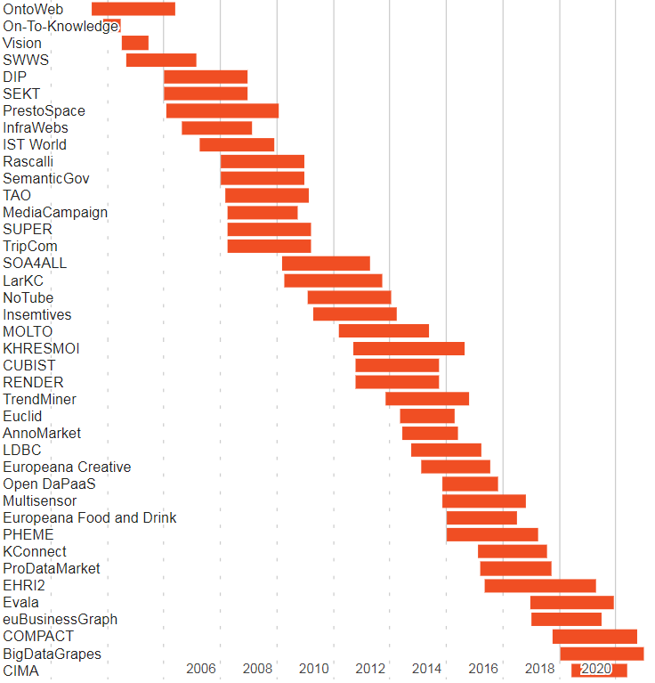
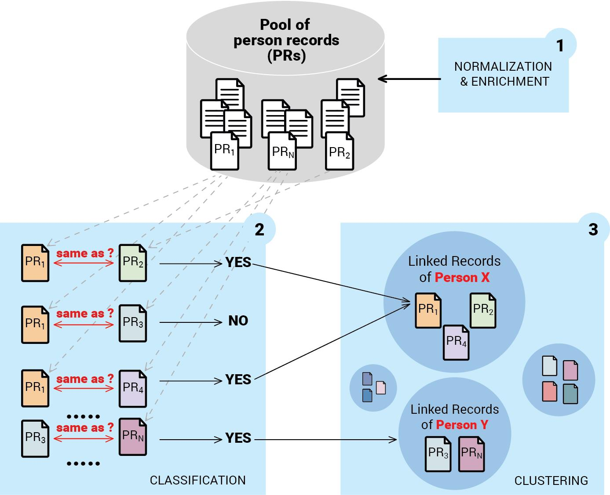
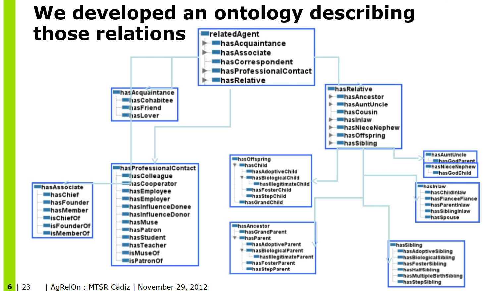
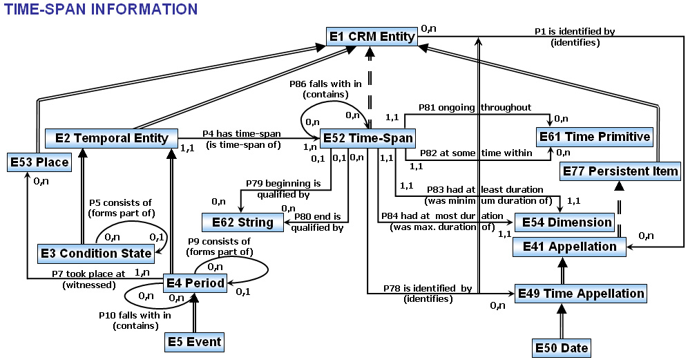
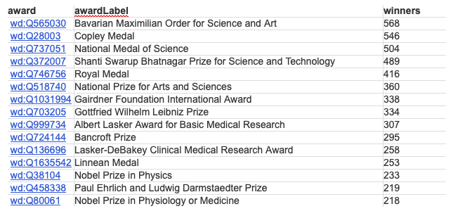
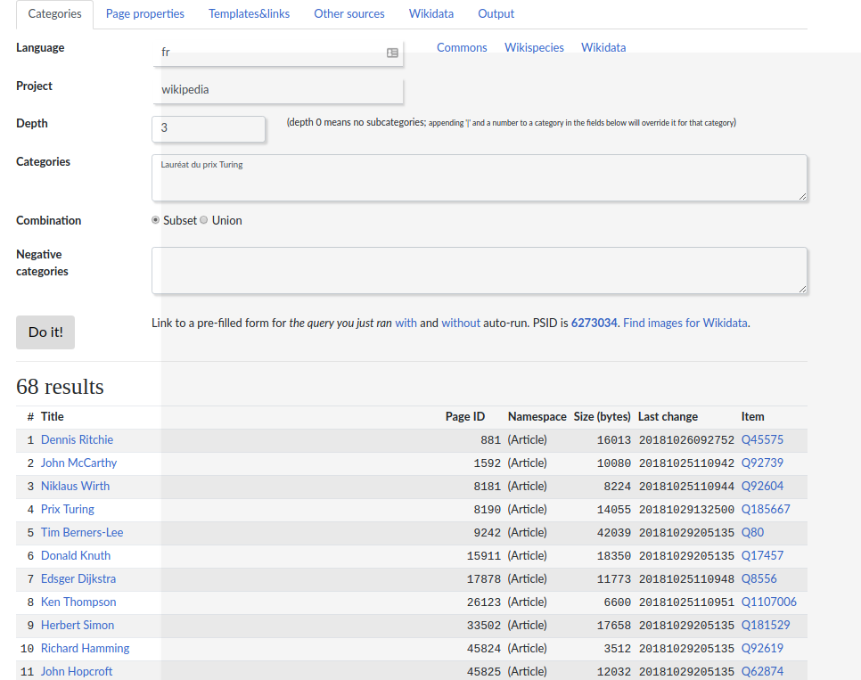

Semantic technologies in practice: Designing, building and exploiting knowledge graphs at Ontotext
2018-10-31
1 About Ontotext
1.1 About Ontotext
- Founded 2000, part of Sirma Group (400 people, BSE:SKK, part of SOFIX), venture funding 2008
- 65 people: 7 PhD, 30 MS, 20 BS, 6 university lecturers. Offices in Sofia, Varna, London
- Core part of Sirma Strategy 2022 with focus on cognitive computing
- Working on: semantic technologies, semantic repositories, semantic text analysis, machine learning
- Semantic Graph Database: Ontotext GraphDB
- Semantic data integration and building of Knowledge Graphs
- Semantic text analysis: entity, concept, relation extraction, document classification
- Recommendations, sentiment analysis
- Machine learning: entity disambiguation, deep learning in graphs, etc
1.2 Research Projects
1.3 Current Projects:
- EHRI2: European Holocaust Research Infrastructure (H2020 RI)
- Evala: Congnitive and Semantic Links Analysis and Media Evaluation Platform (EuroStars)
- euBusinessGraph: Innovative Data Products and Services for Company Data (H2020 BigData Experimentation)
- COMPACT: From Research Through Policy on Social Media and Convergence (H2020 CSA)
- BigDataGrapes: BigData to Enable Global Disruption of the Grapevine-Powered Industries (H2020 BigData Research)
- CIMA: Company Intelligent Matching and Linking (BG OPC ISIS)
- TRR: Tracking of Research Results for EC framework programs (EC Tender)
1.4 Research and Innovation Awards
Arguably, Ontotext is the most innovative Bulgarian software company.
- Innovative Enterprise of the Year 2017
- EU Innovation Radar Prize 2016 nomination
- BAIT Business Innovation Award 2014
- Innovative Enterprise of the Year 2014
- Washington Post “Destination Innovation” Competition 2014 Award
- Pythagoras Award 2010 for most successful company in EU FP6 projects
We have more EU research projects than some universities combined
1.5 Industries and Clients
80% of our sales are in the UK and US
- Media: BBC, UK Press Association, NL Press Association (NDP)…
- Financial Info: S&P Global Platts, Euromoney, Financial Times, Nikkei…
- STEM Publishing: IET, Oxford University Press, Wiley, Elsevier, Springer Nature…
- Life Science: AstraZeneca, Novartis…
- Government: UK Parliament, The National Archives, Natural Resources Canada…
- Cultural Heritage and Digital Humanities
1.6 About Me
- 2009 - MS in Linguistics at Toulouse Federal University
- 2010-2015 PhD in Natural Language Processing at Toulouse Federal University
- Processing of avaiation incident and accident reports.
- Data from Air France, DGAC and EASA
- 2017 Semantic data consulting at Ontotext
2 EHRI - European Holocaust Reaserch Infrastructure
2.1 Context
- The EHRI project
- Core consortium of more than twenty organisations – research institutions, libraries, archives, museums and memorial sites.
- Mission is to support the wider Holocaust research community by building a digital infrastructure and facilitating human networks
- Person networks case
- 5Mi Records of Holocaust survivors and victims (HSV)
- Producing and publishing a coherent dataset capable of supporting quantitative research approaches.
2.2 The Data problem
- Transcripts of lists of names aggreted and managed by USHMM
- over 40K sources (12K digitalized)
- Total 5M records, one name per record + information depending on the source
- The data is in the form of a digital archive
- Excellent for finding information about individuals
- Maximum of information from the various sources is conserved R
- Impossible to exploit without a per record human interpretative effort
- No record deduplication
- Ambiguous property names
- Important information raw in text fields
2.3 Example sources
- 243964 Lodz-Names: A Record of the 240,000 Inhabitants of the Łódź Ghetto
- 3261 Seznam osob popravených na základě rozsudku stanného, lidového a zvlastního soudu od 27.září 1941 a osob, jimž bylo zabaveno jmění podle těchto nařízení
- 3260 Jewish Families Deported from Dorohoi to Transnistria
- 3256 List of The Jews of Dés (Dej) Used in the Ghettoization of May 3-10, 1944
- 3180 [Auschwitz to Buchenwald Transport, January 26, 1945]
- 1525 [Data file of Jewish property owners in Panevezys, Lithuania from the Panevezys County Archive]
- 1522 Franzstrasse Nr. 38
- 740 [Name data from a list of Jews who were released from Bergen-Belsen and arrived in Switzerland in December 1944]
- 501 Survivor children airlifted from Theresienstadt “camp-ghetto” to England post-war
2.4 Data integration task
- Record deduplication - identical/similar sounding names and close birth dates
- Reconstructing family relationships
- Linking people-clusters to events
2.5 Linking and deduplication
2.6 Inferring Family relations
- Explicit family relations for 142K pairs (manually constructed by historians)
- Many more in the data
- Families referenced by common number
- People listed with their address
- Relationships between people present (in all european languages)
2.7 Peson networks model

2.8 AgRelOn Ontology
2.9 Results
- From a source of 104K explicit relations inference of 10K more links between previously unconnected nodes (10% expansion) in the explict data
- More possible (e.g cousins) if we extend AgRelOn even further
- Use of the AgRelOn abstraction hierarchy (agrelon:hasRelative agrelon:RelatedAgent) and basis for bootstraping even more relations based on fragmented information from the original sources
- Infer hasRelative based on available information (shared address, family number)
- Use “relationshipToHead” property to further refine the relationship type
- Total inferred relations
- 104M agrelon:relatedAgent
- 5.7M agrelon:HasRelative
- 76K agrelon:hasOffspring
- etc…
2.10 Constructing of personal events
(Work in progress)
- Construct personal events combining data from the source and data from the record.
- Use CIDOC-CRM ontolgy (very complex)
- Perform location matching
- Geonames for known locations
- Custom lists for historic locations (camps, ghettos etc)
- Large number of completely unknown locations?
- Connect people to temporal intervals and perform temporal reasoning to construct personal trajectories
2.11 CIDOC-CRM temporal entity model
3 TRR - Tracking of Research Results
3.1 Context and scope
TRR Tracking of Research Results EC want to better track impact of framework research programs
Pilot project - scope FR7-SP1 (8000) eu funded projects
Ontotexts tasks:
- Semantic Data integration from various graphs of science
- Publications
- Researchers
- Organisations
- Patents
- Datasets
- Data management and hosting
- Work on success indicators
- Build and host integrated knowledge graph
- NLP on project reports
- Web Scraping and crawling?
3.2 Potential Datasources for a aggregated knowledge graph
- OpenAIRE (Solid links to EC projects, quantity)
- CrossRef (issuers of DOI)
- OpenCitation (OCC and COCI)
- Scopus
- Web of Science
- Microsoft Academic Graph (solid data on affiliations)
- Semantic Scholar
- Arnet Miner
- Lens.org (Patents)
- ORCID: researchers, CVs (education and employment affiliations), publications
- Wikidata, WikiCite, Scholia
- Digital Science: Dimensions, UberResearch
- Wizdom.ai
- Springer Nature Science Graph
- DBLP
- (Aggregation) Open Academic Graph = MAG & Arnet Miner, by paper title, authors, year
- (Aggregation) DOIboost = MAG & CrossRef & Unpaywall, by paper DOI then author names
3.3 Success indicators (1)
- Number of Nobel prize winners among FP7 researchers
- Number of winners of other prestigious international prizes (Fields Medal, Lasker Award, etc.)
- Number of winners of prestigious national scientific prizes
- Number of product, service, process innovations created
- Improved commercialisation/valorisation perspectives (number of projects/technologies attracting interest from industry, evidence of licensing, additional investment attracted, etc.)
- Number of dissemination events (conferences, workshops, etc.), of which key/major events involving policymakers
- Project websites (working/not working)
- Presence of social media profiles
- Data management plans
- Evidence of data shared
- Leveraged private and public investment in R&I (no. Of additional projects/grants; total funding received in euros)
- Additionally leveraged funding by SMEs/spin-offs/other organisations
- Number of researchers moving to another country/sector/discipline (for key researchers)
3.4 Success indicators (2)
- Growth, jobs, industrial partnership, innovation clusters, access to new markets, commercialisation/potential for commercialisation, partnerships
- Effects of FP7 participation on economic performance (matched-pair approach)
- Number of new companies/spin-offs created
- Performance of newly created SMEs/spin-offs (size, turnover, profitability, etc.)
- Improved health and quality of life, working life, living environment
- Improved life expectancy
- Evidence of uptake of FP7 research in clinical guidelines/clinical trials involving humans (optional)
- Improved environmental performance, reduced greenhouse gas emission, reduced air pollution, improved water quality, better mitigated environmental risks, etc.
- Economic impacts, economic benefits, improved efficiency (in euros)
- Improved competitiveness relative to the US, Japan, China, other countries
- Social and cultural impacts (various, as per annex 13)
- Improved convergence between EU-15 and EU-13
- Influence on policy making/political impact
3.5 Indicator 14 Scientific Awards
Gathering awards from Wikidata
- Wikidata had concentrated structured data about 1224 “science awards”
- Some awards did not have the appropriate Wikidata type (ex. “award” instead of “science awards”).
- Using the WP Category system we were able to add the correct type and extend the list to 1815 awards.
3.6 Award winners in WikiData
Wikidata also has info on award winners (27443 “wins” of 983 awards)
3.7 Extending wikidata award winners from Wikipedia categories
- Award winners are often listed in Wikipedia using Wikipedia Categories
- Categories are not the same accross languages
- Wikidata has a property linking the award entiy to the wikipedia category
- PetScan extracts lists of objects wikidata entitites from wikipedia categories
Result: 2367 new award winners in Wikidata.
3.8 Petscan Interface
3.9 Adding weight to awards
- The IREG Observatory’s list contains the most prestigious awards ranked by reputation score
- The PDF file needs has been converted into a table
- The data has been matched to the list of awards from Wikidata
- The reputation score has been added to Wikidata

4 Cyberthreat Report Screening
4.1 Context and scope
(Open Source Intelligence) OSINT in the Banking sector A lot of cybersecurity related data is publicly available
- Dedicated data model (STIX)
- Data providors - MITRE corp (WIKI and STIX)
- MISP galaxy - Github repo with fresh data
4.2 Unstructured data
- Cybersec reports in plain text
- Security corporations (Symantec, Kaspersky), Blogs etc..
4.3 Cyberthreat report screenening
- Goal1: Integrate public data sources in a client ontology and build a knowledge graph
- Goal2: Automatically extract instance data from raw text and further populate the knowledge graph
- Main difficulty: Entities manifest at different levels:
- Local Named entities (apt28, group123, rokrat) - trivial to annotate automatically
- Complex entities such as techniques and tactics are more complicated
This vulnerability is a use after free that allows Remote Code Execute T1203 Exploitation for Client Execution
4.4 Manual Annotation and textual classifcation task
- Manually annotate documents using Ontotext’s annotation tool
- Build a textual classification pipeline that predicts if a sentence is a mention of a “Technique” or “Tactic” class.
5 Conclusions
The Knowledge Graph is at the center of all projects and applications at Ontotext * EHRI - How available ontologies help organize the data an render it publishable
* TRR - The importance of crowd-sourced data sources * CyberSec - An approach to convert unstructured textual data to a structured form in a commercial application
6 Public demos
6.1 Ontotext FactForge
FactForge is a hub for open data and news about people, organizations and locations. Contains over 1B facts Showcasing GraphDB and Semantic Technologies
6.2 GraphDB
- Fast triplestore 100% W3C compliant
- Free version with very few limitations
- Excellent SPARQL editor
- Excellent ETL tools (OpenRefine integration)
- Fulltext search integration (Lucene, SOLR, Elastic)
- Very well documented
- Many more features
- Academic cooperation program
https://www.ontotext.com/products/graphdb/editions/

@ UniYork